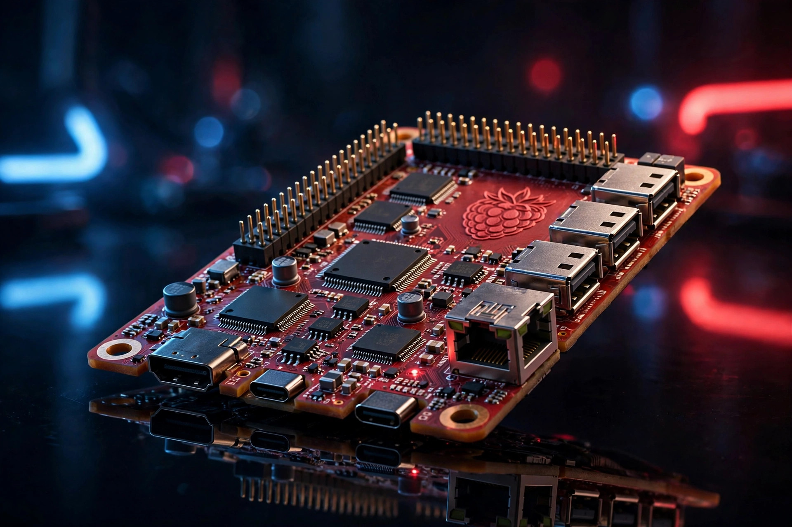

Raspberry Pi 6: todo lo que se sabe (y qué comprar mientras esperas)
La Raspberry Pi 6 es la placa fantasma del home lab: todo el mundo habla de ella, nadie la ha visto. En esta guía separamos lo confirmado de lo rumoreado con honestidad, y te decimos qué puedes comprar hoy que seguirá sirviéndote el día del lanzamiento. Porque esperar dos años con las manos vacías no es un plan.

Lo confirmado: casi nada, y eso ya dice mucho
A septiembre de 2026, Raspberry Pi no ha anunciado oficialmente la Pi 6: no hay fecha, no hay hoja de especificaciones y no hay página de producto. Lo que sí hay:
- Desarrollo en curso. En sus resultados financieros de 2026, la compañía indicó que el desarrollo de la Raspberry Pi 6 sigue adelante, con "mejoras significativas en rendimiento, eficiencia y facilidad de uso" y énfasis en la continuidad del software: lo que hoy corre en tu Pi 5 debería seguir corriendo en la Pi 6 sin reinstalarlo todo.
- No antes de 2028. En una sesión de preguntas y respuestas con la comunidad, ingenieros senior de Raspberry Pi señalaron que no veremos la Pi 6 antes de 2028 como muy pronto. La razón: la escasez mundial de memoria DRAM y de sustratos ha encarecido tanto los componentes que lanzar una placa nueva y más cara ahora mismo no tendría sentido.
- La Pi 5 sigue siendo la reina. La compañía está ampliando el ecosistema actual (nuevos niveles de memoria, Compute Module 5, accesorios con enfoque en IA) en lugar de correr hacia la siguiente generación.
Traducción práctica: si necesitas una placa hoy, no esperes a la Pi 6. Te faltan al menos dos años de espera.
Lo rumoreado: qué podría traer (etiquetado como rumor)
Todo lo de esta sección es especulación de la comunidad y la prensa especializada, no información oficial. Lo incluimos para que sepas distinguir un titular con fundamento de un invento:
- CPU más rápida: se habla de un salto a núcleos ARM Cortex-A78, con mejor rendimiento en multitarea e IA local. Rumor.
- Más memoria y más rápida: el salto a DDR5 con mayor ancho de banda aparece en varias quinielas. Rumor.
- PCIe de verdad: la Pi 5 tiene un solo carril PCIe que limita el rendimiento NVMe; la apuesta es que la Pi 6 ofrezca más carriles. Rumor, pero con lógica técnica.
- Mejor gestión térmica y de energía: la Pi 5 corre caliente y exige fuente de 27 W con negociación USB-C; se espera que la Pi 6 refine ambos frentes. Rumor razonable.
- Sin NPU dedicada: según lo declarado por sus ingenieros, la prioridad es mejorar la CPU para cargas de IA en lugar de añadir un acelerador neuronal. Esto sí viene de fuente oficial.
Lo que probablemente NO cambiará
- El conector GPIO de 40 pines (la compatibilidad con accesorios es sagrada para Raspberry Pi).
- El tamaño de la placa (todo el ecosistema de cajas depende de él).
- El arranque desde microSD como opción básica.
Qué comprar hoy que te servirá para la Pi 6
Aquí está la jugada inteligente: hay accesorios que compras una vez y te acompañan de placa en placa. Si los adquieres ahora para tu Pi 5 (o para empezar tu home lab), lo más probable es que sigan valiendo cuando llegue la Pi 6:
- Fuente oficial de 27 W. La Pi 5 la necesita y todo apunta a que la Pi 6 mantendrá el mismo estándar de alimentación USB-C. Es el accesorio con mejor retorno: evita avisos de bajo voltaje y placas inestables. Ver precio
- SSD portátil por USB. El almacenamiento no caduca con la placa: un buen SSD te sirve hoy para arrancar la Pi 5 y mañana para la Pi 6. Ver precio
- Tarjeta microSD de marca, clase A2. Barata, y siempre útil como sistema de respaldo o para probar distribuciones. Ver precio
- Caja con buena ventilación. Si el tamaño de placa se mantiene (lo más probable), tu caja actual podría reutilizarse. Elige una con ventilación real, no una caja cerrada de plástico. Ver precio
¿Y la placa? Si la necesitas ahora, la compra lógica sigue siendo la Raspberry Pi 5: tienes nuestra guía completa de qué modelo y accesorios elegir. Cuando la Pi 6 salga, actualizaremos esta página con la comparativa y los enlaces de compra del primer día.
Qué NO comprar todavía
- "Kits de Raspberry Pi 6" en tiendas genéricas. No existe la placa; cualquier kit que la mencione es humo o una estafa. Denúncialo y sigue adelante.
- Pre-reservas o depósitos. Ningún vendedor legítimo acepta reservas de un producto no anunciado.
- Accesorios "para Pi 6" sin especificaciones oficiales. Hasta que Raspberry Pi publique las medidas y conectores, nadie puede garantizar compatibilidad.
Veredicto: el plan sensato hasta 2028
- Si empiezas tu home lab hoy: compra una Pi 5 de 8 GB con fuente oficial y buen almacenamiento. En dos años la amortizas de sobra. Ver precio
- Si ya tienes una Pi 5: no hay nada que esperar; invierte en almacenamiento y refrigeración, que es lo que más se nota.
- Si quieres estar listo para el lanzamiento: guarda esta página en favoritos. La actualizaremos con especificaciones oficiales, precios y enlaces de compra en cuanto Raspberry Pi anuncie la Pi 6.
Preguntas frecuentes
¿Cuándo sale la Raspberry Pi 6?
No hay fecha oficial. Sus propios ingenieros apuntan a no antes de 2028, condicionado a que se normalice el precio de la memoria DRAM. Cualquier fecha anterior que veas en un titular es especulación.
¿Cuánto costará?
Sin anuncio oficial no hay precio. La tendencia (subidas de precio en los modelos actuales por el coste de la DRAM) sugiere que no será más barata que la Pi 5. Cuando haya precio oficial, lo publicaremos aquí.
¿Merece la pena esperar a la Pi 6 en lugar de comprar la Pi 5?
No. Son al menos dos años de espera por mejoras que aún son rumores. La Pi 5 tiene un ecosistema maduro, software estable y comunidad enorme hoy mismo.
¿Servirán mis accesorios de la Pi 5 en la Pi 6?
Lo más probable: fuente USB-C de 27 W, SSD por USB y tarjetas microSD, sí. Las cajas específicas de la Pi 5 dependerán de que se mantenga el tamaño de placa, que es lo habitual pero no está confirmado.
¿La Pi 6 tendrá IA integrada (NPU)?
Según sus ingenieros, no es la prioridad: prefieren una CPU más potente que ejecute bien las cargas de IA antes que añadir un acelerador dedicado. Esto puede cambiar, pero hoy es la postura oficial.
Información verificada en septiembre de 2026 a partir de declaraciones oficiales de Raspberry Pi y prensa especializada. Los rumores están marcados como tales. Los precios y la disponibilidad pueden cambiar.